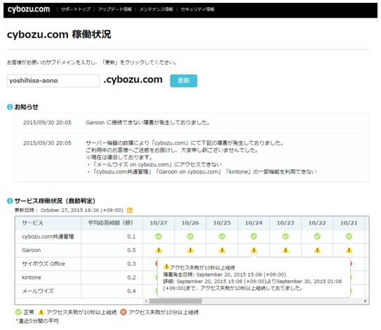
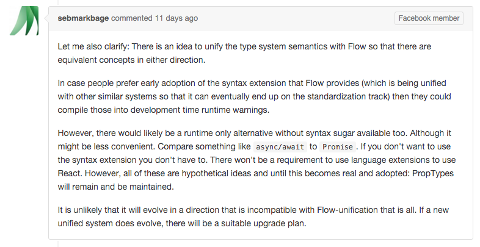

name: rkaneko-theme layout: true class: rkaneko-theme --- class: title-page # React/Reduxにおける # 現場での喜び・ツラみ ### React.js meetup \#3 #### Feb 23, 2016 ##### @ Cybozu, Inc .right[.footnote[Ryota Kaneko]] --- # Agenda 0. Intro 0. React/Reduxにおける~~喜び~~・ツラみ 0. Ecosystemが絶賛成長中 0. ES6 ModulesとTesting 0. リファクタリングとPropTypes --- class: center #### "cybozu.com稼働状況をReact/Reduxで作り直した話" http://blog.cybozu.io/entry/2015/11/04/080000  https://status.cybozu.com/ --- class: center, middle # React/Reduxにおける # 現場での~~喜び~~・ツラみ 喜びについては話しません. 今日ここに来ている皆さんは喜び部分は知っていると思うので. --- class: paragraph-page ## Ecosystemが絶賛成長中 --- ## Ecosystemが絶賛成長中 + SPAにおいて必要不可欠なrouter + React/Reduxにおけるデファクトのrouterは? |libs|GitHub star| |:---:|:---:| |[react-router](https://github.com/reactjs/react-router)|10,695| |[react-router-redux](https://github.com/reactjs/react-router-redux) a few month ago [redux-simple-router](https://www.npmjs.com/package/redux-simple-router)|2,021| |[redux-router](https://github.com/acdlite/redux-router)|1,484| .right[counted on Feb 14, 2016] --- ### react-router + 1.x → 2.x のupdateでbreaking changes有 - history instance がsingleton - mixinsがdeprecatedに - programmatic navigation のsignatureがsimpleに + v2.0.0 Upgrade Guide - https://github.com/reactjs/react-router/blob/master/upgrade-guides/v2.0.0.md - ドキュメントも豊富で、使いやすくなっているので◎ --- ### Reduxにおいてrouterはどうあるべきか? + action: 何かが起こったというを説明するオブジェクト - Three Principles @ redux docs - http://redux.js.org/docs/introduction/ThreePrinciples.html + URL(state)を変更したい! → actionをstoreにdispatchすべき? --- ### reactjs/react-router-redux example ```js import { routeActions } from 'react-router-redux'; // pushState() + dispatch action相当のことを行うAPI <Button onClick={() => dispatch(routeActions.push('/foo'));}/> ``` ```js import { UPDATE_LOCATION } from 'react-router-redux'; function someReducer(state, action) { switch (action.type) { case UPDATE_LOCATION: // do something } } ``` --- ### デファクトのrouterは? + ひとつのことをうまくやるということでは、react-router v.2.x が良い. --- class: paragraph-page ## ES6 ModulesとTesting --- class: center, middle #### ES6 Modules使ってますか? #### Testing librariesは何使ってますか? #### Unit testでmodulesのMockどうやってますか? --- ### 弊社のReactを使ったProjectでは... + ES6 Modules使ってますか? - Yes + Testing librariesは何使ってますか? - mocha - power-assert + espower-babel + ES6 - jsdom + Unit testでのmodulesのMockどうやってますか? - proxyquireを使っている - https://github.com/thlorenz/proxyquire --- ### Babel6 shock + ES6 default exportのみで構成されるModuleをCommonJS形式でrequireするときは注意が必要 ```js // deps: a.js export default function a() { console.log('Hello a!'); } ``` ```js // main: main.js const a = require('./a'); export function main() { // Babel5 a(); // Babel6 a.default(); } ``` --- ### Testでproxyquireを使っている場合にBabel shockに受ける影響 以下の2つの場合でBabel5,Babel6で書き方を変えなければならない. + production codeにES6 default exportのみで構成されるModuleをCommonJS形式でrequireしている箇所 + テスト対象がdefault exportのみから構成され,かつテスト対象Moduleの依存ModuleをMockしたいとき --- ### Babel5 + テスト対象: main.js(default exportのみで構成されるES6 Module)がa.js(default exportのみで構成されるES6 Module)に依存している場合 ```js import proxyquire from 'proxyquire'; const aStub = function a() { console.log('Mock hello a!'); } // test target: main(default exportのみから構成されるES6 Module) const sut = proxyquire( 'path/2/main', { './a': aStub } ); describe('test main', () => { it('mainがaに依存している', () => { sut(); }); }); ``` --- ### Babel6 + テスト対象: main.js(default exportのみで構成されるES6 Module)がa.js(default exportのみで構成されるES6 Module)に依存している場合 ```js import proxyquire from 'proxyquire'; const aStub = { // default exportのpathはdefaultに default: function a() { console.log('Mock hello a!'); } }; // test target: main(default exportのみから構成されるES6 Module) const sut = proxyquire( 'path/2/main', { './a': aStub } ).default; // defaultが必要に describe('test main', () => { it('mainがaに依存している', () => { sut(); }); }); ``` --- class: paragraph-page ### package update時に ### Testが動かなくなるのは辛い ### ＼(^_^)／ --- ### @teppeis曰く --- class: paragraph-page ## リファクタリングとPropTypes --- ## リファクタリングとPropTypes ソフトウェアの要件は常に変わっていくもので,当然React Componentのpropsも変化する. + Componentで表示する内容の変更 + サーバAPIのレスポンスの変更 + etc --- ### PropTypes#shape shapeを作って,PropTypesの修正箇所を局所化することもできるが... ```js import { PropTypes } from 'react'; const entryShape = PropTypes.shape({ body: PropTypes.string.isRequired, eid: PropTypes.number.isRequired, permanentLink: PropTypes.string.isRequired, postedAt: PropTypes.string.isRequired, title: PropTypes.string.isRequired, urlFirstImage: PropTypes.string.isRequired, }); export default entryShape; ``` ```js import entryShape from 'path/2/entry-shape'; export default SomeComponent extends Component { render() { // blahblah } } SomeComponent.propTypes = { entries: PropTypes.arrayOf(entryShape).isRequired }; ``` --- ### PropTypesはruntime check + 動かしてみないと,propsがきちんと渡ってきているか検証できない. + 静的解析やcompile timeにcheckしたい. --- ### PropTypes in the future .center[] .center[https://twitter.com/dan_abramov/status/697511436088668164] --- ### PropTypes in the future Facebook member sebmarkbage said on Feb 10th, 2016. .center[] .center[https://github.com/facebook/react/issues/1833#issuecomment-182665824] --- ### PropTypes in the future + Flow使ってpropsのcheck試して見てる人もいる. + Replace React.PropTypes with Flow types #277 - https://github.com/facebook/flow/issues/277 --- class: paragraph-page # Conclusion --- # Conclusion + React/FluxとそのEcosystemは進化中なのでそれなりにツラみもある. + React/Fluxにおけるメリットは捨てがたいので,ツラみ等知見を共有したい. --- class: paragraph-page ### Thanks!